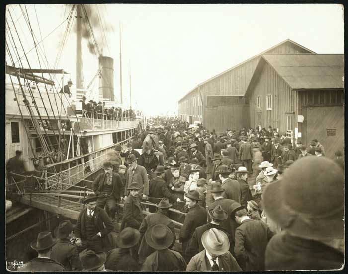

Chapter 5
The Portland’s Manifest
The hull of the Portland sat low in the water. She was a sternwheeler, built for the shallow rivers of Alaska—not elegant, but she carried her cargo the way a draft horse carries a dray: low, visible, undeniable. She had come down from St. Michael, the port at the mouth of the Yukon, and she was riding heavy. A year before the North-West Mounted Police would set their tripod scales at the summit of the Chilkoot, before any clerk in Ottawa or Regina had finished codifying the regulation that would make a route into a corridor and a corridor into a system, this ship carried something that made the waterline sink and the hull sit stiff against the tide. The date was the morning of July 17, 1897. The place was Seattle, at Schwabacher’s wharf on Elliott Bay.
A reporter from the Post-Intelligencer shouldered through the crowd that had begun to gather at the foot of Madison Street. The rumor had come ahead of the ship, traveling faster than the vessel could steam, passed from the telegraph office to the newspaper desk to the saloons along Yesler Way. The Excelsior had already landed in San Francisco three days before, on July 14, carrying Klondikers and their gold down the coast. But the Excelsior was a different vessel, a different port, a different crowd. Seattle had its own ship coming. The Portland was the one they were waiting for.
The customs officer stood at the rail with his ledger open. His name does not survive in the record, but his function does. He was the man who would turn cargo into evidence. A ship’s manifest was not a newspaper story. It was a sworn document, a bureaucratic instrument that listed what a vessel carried, who owned it, and where it had been. When the customs officer entered the figures into his ledger, the gold would cease to be rumor. It would become a matter of record, attested by signatures, verifiable by law, enforceable by the state. The Paper Trail would begin here, on this wharf, in this ledger, with these figures.
The Portland tied up at Schwabacher’s wharf at a little past six in the morning. The crowd was already several hundred strong and growing. The wire had been humming since the previous evening, when the Portland was first sighted steaming toward the straits. By dawn, the word was loose in the streets of Seattle: Gold. Klondike. A ton of gold. The figure traveled from mouth to mouth, and no one could say who had said it first, because no one had. It was in the air.
The master of the Portland supervised the docking. The lines were made fast. The gangplank went down. And then the first man came off the ship carrying what the crowd had come to see.
He carried a leather satchel, heavy, held with both hands. He walked carefully down the plank while the crowd pressed forward against the rope the wharfinger had strung across the dock. The customs officer motioned the man to his table. The satchel landed on the wood with a sound that was not the sound of clothes or tools or provisions. It was the sound of weight concentrated in a small space. The customs officer opened it. Inside, the gold was in sacks—canvas and leather, each one tied and marked. He began to count. He entered the figures in his ledger. The man who owned the satchel stood beside the table and waited, because the law required him to declare what he was bringing into the United States.
More men came down the gangplank. They carried satchels, flour sacks, canvas bundles, and wooden boxes with rope handles. Some carried their gold in their pockets. One man came off carrying nothing visible, and then the customs officer found, when the man made his declaration, that he had sewn nuggets into the lining of his coat. The figures accumulated in the ledger. Each man swore to his amount. Each amount went into the book. Together they formed a document that would be cited in newspapers, in government reports, and in the financial columns of London and New York for months afterward.
The figure that would be reported was approximately one and a half million dollars in gold. The Post-Intelligencer would print it. The gold came in several forms: dust filled the canvas sacks; nuggets sat among it, and crude bars that had been melted at the trading posts along the Yukon. The weight was estimated at something close to a ton. The phrase “a ton of gold” would enter the language that day, attaching itself to the rush that followed with the permanence of a brand.
The reporter from the Post-Intelligencer was not the only journalist on the wharf. The Seattle Times had a man there. The Daily Telegraph had a man there. They were elbowing through the crowd, notebook in hand, asking the miners questions as they came off the ship. The miners were willing to talk. They had been on the river for a year or more, and they had stories. One of them described Bonanza Creek—the gravel, the color of the gold in the pan, the winter, the cold, the difficulty of getting supplies up the river before freeze-up. The reporter wrote it all down.
The telegraph operator was sending the wire even as the miners talked. The wire went to San Francisco, to Portland, to Chicago, to New York. The Associated Press picked it up. The words on the wire were the words from the customs ledger, filtered through the reporter’s notebook, compressed into the language of the telegraph: gold, Klondike, ton, Portland, Seattle, July 17. The wire carried the facts, but the facts carried the energy, and the energy traveled at the speed of electricity—faster than any ship, any train, any horse, any rumor.

The editor of the Post-Intelligencer sat in his office on the second floor of the building at the corner of Front and Cherry. He had been waiting for the story since the telegraph brought the first word of the Excelsior’s landing in San Francisco. He knew what the Portland carried. He knew what it meant for Seattle. The city had been in a recession. The railroad boom had collapsed. The silver mines were failing. The lumber trade was soft. The city needed something, and the Portland carried it. The editor made his decision about the headline before the last sack of gold had been tallied on the wharf.
The headline was set in the largest type the composing room possessed. It read, in three lines, each word standing alone: GOLD! GOLD! GOLD! The exclamation points were not decoration. They were punctuation as declaration, the typographic equivalent of the customs officer’s ledger—each one a sworn statement that the thing was real. The extra edition hit the streets of Seattle that afternoon. The newsboys hawked it at the corners. The paper sold the way gold sells, which is to say it sold itself, because the commodity inside the paper was the same commodity inside the satchels on the wharf, and the public knew it.
The crowd on the wharf grew through the morning. By noon, it was not hundreds but thousands. The Post-Intelligencer estimated five thousand. The Seattle Times estimated more.
They came from the hotels, from the saloons, from the counting rooms, from the docks where they worked. They came because the gold was being unloaded in front of them—carried off the ship, set on the customs table, opened, counted, recorded, and carried away again. The spectacle was the point.
If the gold had stayed in the hold, if the manifest had been filed in silence, if the customs declarations had been entered without the crowd, the stampede might not have happened that day. But the gold was visible. It was physical. It was heavy. A man could see it, hear it hit the table, watch the customs officer’s pen move across the page.
The evidence was simultaneous—physical and documentary, spectacle and record—and the combination was irresistible.
The miners who came off the Portland were not rich men in the sense that Seattle understood wealth. They were rough men. They wore mukluks and mended trousers and flannel shirts that had been washed in river water. They had not shaved. Their hands were cracked. But they carried satchels that weighed sixty pounds and were worth more than the building they were standing beside. The contrast was the message. The gold did not care who carried it. It did not ask for credentials. It did not require a name on a social register. It sat in the gravel of a creek in a remote territory that most of the people on the wharf had never heard of, and it waited for a man to pick it up. That was the story the newspaper told, and the story was true, and the truth of it was the problem.
By the afternoon of July 17, the telegraph had carried the story to every major city in North America. In New York, the Herald printed the figures from the customs declarations. In Chicago, the Tribune ran the dispatch. In San Francisco, the Chronicle noted that the Excelsior’s cargo and the Portland’s cargo together represented the largest single shipment of gold to reach the United States from a new field in the history of the nation. The figure was large enough to move markets. It was large enough to move men.
The mechanism was not the gold. The mechanism was the evidence. Gold in the ground in the Klondike was, in July 1897, no different from what it had been in August 1896, when George Carmack and Skookum Jim and Dawson Charlie pulled it from the gravel of Bonanza Creek. The discovery had been registered. The claims had been filed. The mining recorder at Fortymile had entered them in his book. The gold had been there all along.
But the gold in the ground was private—a secret kept by the men who knew and the officials who recorded and the traders who advanced credit and the few travelers who carried the word down the river. The secret had traveled north to south, from creek to post, from post to river, from river to ship, from ship to wharf, from wharf to ledger, from ledger to notebook, from notebook to wire, from wire to press, from press to street.
At each stage, the evidence gained authority. The customs declaration was more authoritative than the rumor. The manifest was more authoritative than the declaration. The newspaper headline was more authoritative than the manifest, because it was louder, and loudness, in the summer of 1897, was a form of proof.
The Stampede Engine had its spark. The machine did not need gold in the ground. It needed gold on a wharf, in a ledger, in a headline. It needed the evidence to be public, verified, and sensational. The Portland provided all three in a single morning. The customs officer with his ledger provided the verification. The newspaper with its headline provided the sensation. The wharf with its crowd provided the publicity. And the gold itself, the physical gold in its canvas sacks, provided the authority that no document could match—the authority of weight, of density, of the thing itself.
The men on the wharf who watched the gold come off the Portland were not watching a discovery. They were watching a conclusion. The voyage was over. The ship had landed. The gold had been counted. The figures had been entered. The declarations had been sworn. The manifest had been filed. The process of documentation, which had begun when George Carmack walked into the mining recorder’s office at Fortymile and swore to what he had found, was complete. The gold was now a matter of public record, attested by the customs of the United States, reported by the Associated Press, confirmed by the physical evidence of the sacks themselves. There was nothing left to verify. The only question that remained was what the public would do with the verification.
What the public did was begin to move. Within hours of the extra edition hitting the streets, men were buying tickets at the steamship offices on Yesler Way and Front Street. The lines formed before the ink on the newspaper was dry. The tickets were for passage to Skagway and Dyea, the two ports at the head of Lynn Canal, the two points where the trails began—the Chilkoot and the White. The men who bought the tickets did not know what the trails were. Nothing had told them about the Tlingit packers who controlled the route, or the summit, the wind, the cold, the weight of a pack at altitude.
The North-West Mounted Police were preparing to require every man who crossed into Canada to carry a year’s supply of provisions—something close to a ton of goods—and the ton would have to be weighed at the summit, and the weighing would be recorded. None of this was known.
What was known was what the newspaper told them: GOLD! GOLD! GOLD! And the price of a ticket.
The steamship agents sold what they had. The tickets were expensive—more than a hundred dollars for passage to Skagway, a sum that represented a month’s wages for a workingman. The men paid it in cash, in gold coin, in promissory notes. Some of them had sold everything they owned to raise the fare. Some of them had quit their jobs that morning, after reading the extra edition on their lunch break. The queue at the dock was the first physical evidence of the stampede, and it formed within six hours of the Portland’s arrival.
The telegraph office continued to send. The wire carried the story to the interior—to Spokane, to Tacoma, to the mining camps of Montana and the wheat towns of the Dakotas. The story traveled east.
By the evening of July 17, the New York Herald had the dispatch on its front page. By the morning of July 18, every newspaper in the country had it.
The figures from the customs declarations were reprinted: the amount, the weight, the number of men who carried it. The figures were approximate, and they varied from paper to paper, because the customs officer’s ledger was not yet public and the reporters had relied on what they could see and what the miners would tell them. The Post-Intelligencer said one and a half million. The Chronicle in San Francisco, combining the Excelsior’s cargo with the Portland’s, said two million.
The discrepancy did not matter. The figures were large enough to make a man quit his job and buy a ticket and pack a bag and head for a port he had never heard of, to walk a trail he could not imagine.
The gold that came off the Portland that morning had been found in the gravel of Bonanza Creek and its tributaries—Eldorado, Hunker, Dominion, Gold Run. The creek that Carmack and Skookum Jim had explored was the most productive, but Eldorado, for the two or three miles in which it was gold-bearing, was much the richest, and for its length probably surpassed any other known placer deposit.
The men who carried the satchels down the gangplank in Seattle had dug this gold from the frozen ground of the Klondike over the preceding winter. Fires had thawed the gravel. Spring breakup had provided the water for washing. From Dawson City to St. Michael, the river journey took weeks. From St. Michael to Seattle, the sea voyage took days.
From the gravel to the wharf, the whole passage took nearly a year. But from the wharf to the headlines took hours, and from the headlines to the streets took minutes.
The customs officer finished his work. The ledger was closed. The manifest was filed. The gold was carried away—some to the banks, some to the assay offices, some to the men’s homes, some to the saloons where it would be spent before the week was out. The wharf emptied. The crowd dispersed. The rope was taken down. The Portland sat at the dock, lighter now, her hull riding higher in the water, her cargo discharged, her voyage concluded. She was a ship. She had carried what she was asked to carry. She had no part in what came next.
What came next was the movement. The gold had been still—in the ground, in the pan, in the sack, in the hold, on the table, in the ledger.
But the evidence of the gold—the newspaper, the headline, the telegraph, the figures, the story—was not still. It moved at the speed of the telegraph and the speed of the printing press and the speed of a man walking to the steamship office to buy a ticket. The evidence was what moved, and what the evidence moved was men. In the resulting Klondike stampede, an estimated one hundred thousand people would try to reach the goldfields, though only around thirty thousand to forty thousand eventually would. The height of the rush would last from the summer of 1897 to the summer of 1898. It began on this day, on this wharf, in this city, with this ship, with this manifest, with this ledger, with this headline.
The irony was structural. The Portland had carried the gold out of the Klondike. The stampede would carry men in. The ship had moved in one direction, from north to south, from the wilderness to the city, from the creek to the bank. The men who read about the gold would move in the opposite direction. The two movements crossed on the wharf in Seattle, and the crossing point was the customs officer’s table, where the gold was counted and the figures were entered and the record was made. The table was the hinge. On one side was the conclusion of a private discovery. On the other was the beginning of a public mania.
The discovery on Bonanza Creek had been made by men who were looking for gold. George Carmack had been in the territory since 1890, when he went to Alaska and married a woman of the local people. In 1897 he located at the mouth of the Klondike River for the purpose of salmon fishing, but this not proving profitable, he moved up the river till he came to Bonanza Creek, which he began to explore for gold. He found it. Skookum Jim found it. Dawson Charlie found it. They filed their claims. They told their friends. The word traveled up and down the river. The winter closed the river. The word was trapped. The spring opened the river. The Portland carried the gold, and the gold carried the word, and the word, once it hit the newspaper, carried everything else.
The crowd on the wharf had not seen the gravel of Bonanza Creek. Frozen ground was unknown to them. The fires that thawed it were unknown. The cold, the mosquitoes, the mud—none of it was visible from Schwabacher’s wharf.
What was visible: the satchels, the ledger, the headline. The conclusion without the process. The gold without the ground.
And this was the power of the evidence: it showed the result and concealed the cost. The customs declaration recorded the amount of gold. It did not record the labor that produced it. The manifest recorded the weight. It did not record the cold. The newspaper recorded the figure. It did not record the distance, the altitude, the wind, the weight of a pack on a man’s back at the summit of the Chilkoot Pass.
The evidence was true and the evidence was incomplete, and the incompleteness was the engine of the stampede, because the evidence showed men what they wanted to see and hid what they did not want to see, and the hiding was not deception but simplicity, which was worse.
The men who bought tickets at the steamship offices on July 17 did not know what the North-West Mounted Police were preparing.
The rule that would require a year’s supply of provisions, the ton of goods that would have to be carried and weighed and recorded at the border, was still being written in offices far to the east. The police, under the command of Sam Steele, were already moving toward the passes, but the crowd at the ticket counter had no way of knowing this.
Steele would establish his post at the summit and turn the trail into a corridor and the corridor into a checkpoint and the checkpoint into a system that would make the stampede survivable but also slower, harder, more expensive, and more regulated than any gold rush in the history of the continent. The ton of goods would become the real burden of the Klondike—heavier than the gold, more enduring than the gold, more consequential than the gold.
None of this was known because the newspaper did not tell them, and the newspaper did not tell them because the newspaper did not know either. The newspaper knew what the customs officer knew: the amount, the weight, the names. The newspaper printed what it had. What it had was enough.
The Portland’s manifest was the first public document of the Klondike gold rush. It was the paper that triggered the movement.
Before the manifest, the gold was a story. After the manifest, the gold was a fact—verified by the customs officer’s pen, by the sworn declarations of the miners, by the physical weight of the sacks on the wharf, and by the newspaper’s headline. The verification was simultaneous and total.
No one who stood on Schwabacher’s wharf on the morning of July 17, 1897, and watched the gold come off the Portland could doubt that the gold was real. The doubt, if there was any, was about what the gold meant. And what the gold meant was not that a man could get rich. What the gold meant was that a man could get rich and the getting was documented, attested, recorded, published, and verified by the institutions of the state. The gold was not a rumor. The gold was a fact. And the fact had a manifest.
The dock was quiet by evening. The Portland sat at her mooring. The tide had turned. The water in Elliott Bay was calm. The extra editions lay in the gutters, trampled and read. The telegraph office had gone quiet. The steamship offices had closed. The tickets had been sold. The men who had bought them had gone home to pack. They would pack what they thought they needed, which was not enough, which was never enough, which was the reason the police would build their scales at the summit and require the ton and weigh it and record it and turn the trail into a system that could carry the weight of what was coming.
The Portland had carried a ton of gold. The stampede would carry a ton of goods. The ship was still. The movement had begun.